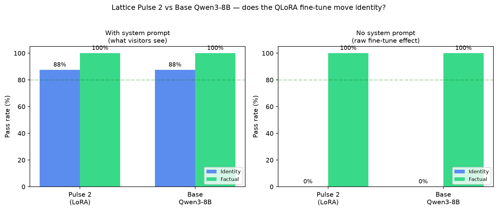
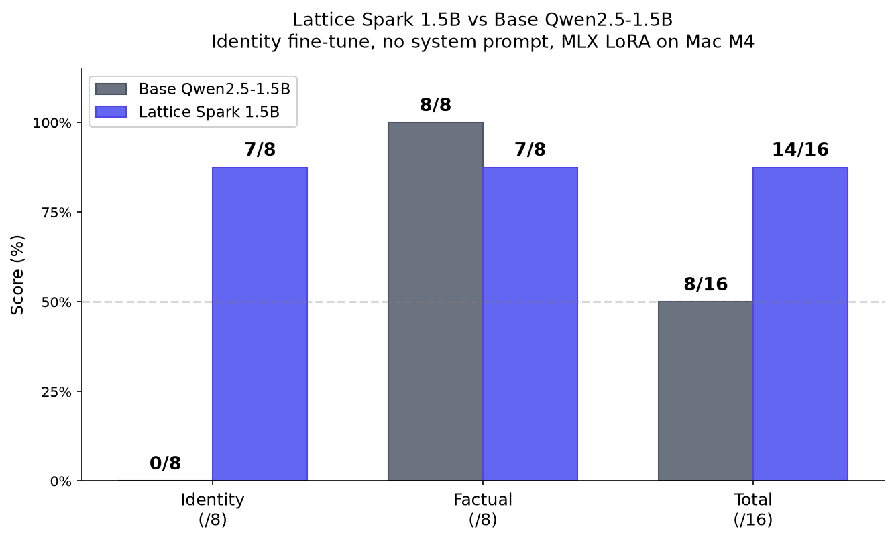

Honest numbers across the Lattice lineup — Mini (42M from scratch),
Pulse (1.5B fine-tune), and Pulse 2 (8B QLoRA). Every chart shows the
comparison against the relevant base model, including the cases where
the fine-tune turns out to do nothing.
Pulse 2 vs base Qwen3-8B
QLoRA rank-16 fine-tune of Qwen3-8B. Head-to-head on identity and
factual prompts, under two conditions: with the Lattice system prompt
(what the live site sends) and without it (isolates what the fine-tune
itself contributes).
0%
identity without system prompt (Pulse 2 = base)
100%
factual accuracy retained — no forgetting
8/8
identity prompts leaked "Alibaba" / "Qwen" with no prompt
Pulse 2 vs base Qwen3-8BIdentity + factual eval · with & without system prompt

What this shows: the rank-16 LoRA has no measurable effect on
identity — without the system prompt, Pulse 2 says "I am Qwen, made by
Alibaba" exactly like the base model. The Lattice branding visitors
see on the site comes entirely from the system prompt. The genuine
positive: the fine-tune caused zero catastrophic forgetting —
factual accuracy stayed at 100% across every condition.
Lattice Spark (1.5B MLX LoRA fine-tune, trained on Mac M4 in 35 seconds).
Identity baked into the weights — says "Lattice Systems" with no system
prompt. Knowledge intact.
0→7
identity score improvement (out of 8)
7/8
factual accuracy retained (only missed 9×8)
+6
net score improvement vs base
Spark vs base Qwen2.5-1.5BIdentity + factual eval · no system prompt · MLX LoRA

What this shows: unlike Pulse 2 (where identity came entirely
from the system prompt), Spark genuinely owns the Lattice identity in
its weights. Trained with MLX LoRA (rank 8, 50 iterations, 111 examples)
on a MacBook Air M4 — no cloud GPU needed. The 1.5B base is big enough
to absorb identity training without forgetting knowledge.